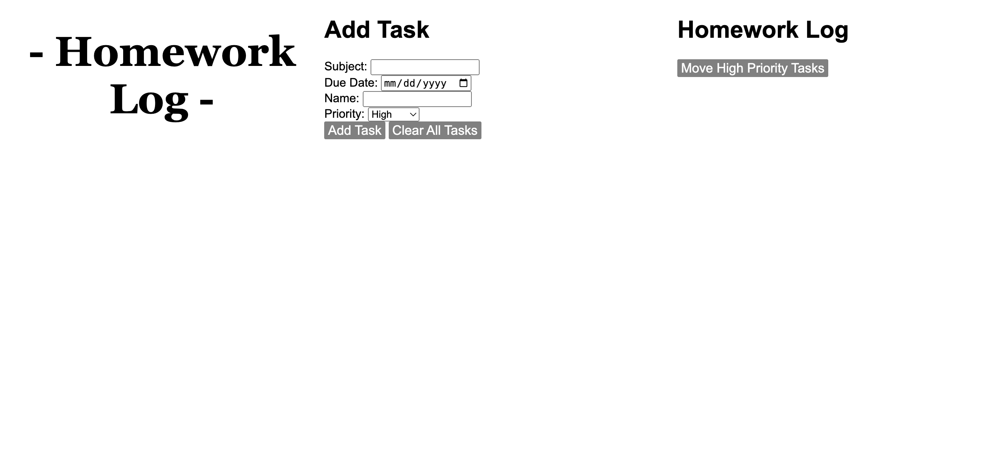
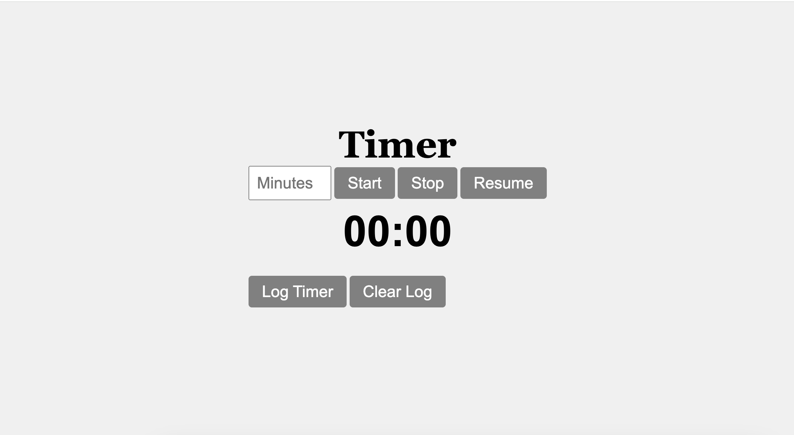

This page is full with projects I have done throught the years. The following four buttons, once clicked,will redirect you to a page I have done. When you scroll down it will have
List of projects I've done.
- Attck on Titan fan page
- Small projects with javascript
- Questionare and guessing game project
- Productive website
- Timer
One of my current projects is developing a Baymax bot on Telegram. This bot will serve as a calculator, performing simple mathematical operations such as addition, subtraction, multiplication, and division. It will also include options to change the language and customize the background.

I plan to work on designing an app using Jotform to get a visual understanding of how the app functions and identify any modifications needed through testing. Once I complete the initial design and make the necessary adjustments on Jotform, I will use additional resources to develop a fully functional and official app for IOS and Android.

I started working on the website version last year. The website features a Pomodoro timer, a page with bullet journal resources, an inspiration board, a productivity Spotify playlist, and much more.
The third project I worked on is a quiz and guessing game. The program asks the user randomized space-related questions. Once the user answers three questions correctly, they can move on to the guessing game.
 